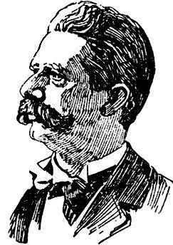
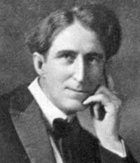
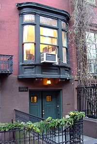
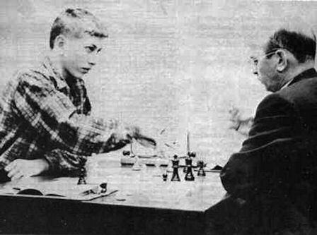
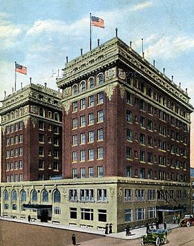
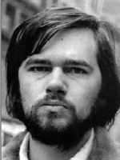
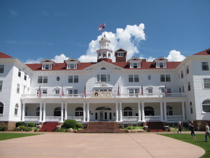
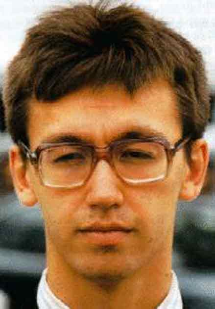
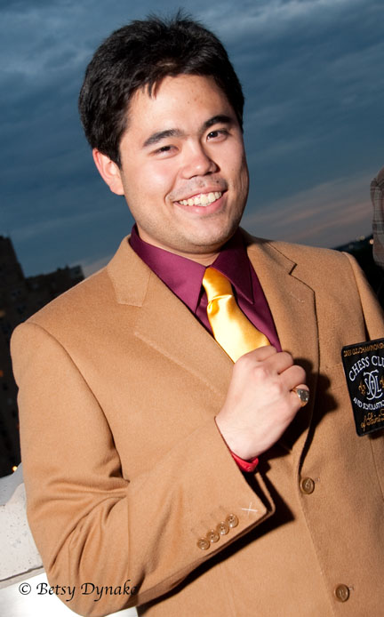
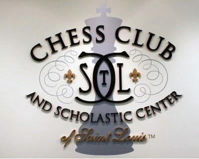

| US Championships |
|  |  |  |  |
| Jackson Showalter | Frank Marshall | Marshall Chess Club | Fischer versus Reshevsky in 1957 |
pgn annotated games of US Championships
Zip CB-files US Championships
The US Chess Championships started with informal matches won by
Stanley in 1845 and 1850. Morphy triumphed in the First USA Chess
Congress. Number one in the next congresses was Mackenzie. The first
official title of US champion could be gained in New York 1889.
Champion became Lipschuetz, although he ended as sixth in the
tournament. Hereafter, many matches were played until Showalter
lost to Pillsbury and Marshall.
When Marshall gave up the title, it paved the way for the first regular US championship, New York 1936. The early regular championships were won by Reshevsky, ahead of Fine and Kashdan. A new talent was Larry Evans.
The event became annual and financially solid in 1957. Qualification was stricken. Rating became the criterion. This change coincided with the participation by Bobby Fischer, the future world champion. He would partake and win eight times.
The championship had been dominated by Jews from New York. A new generation emerged in El Paso 1973. Walter Browne would win the championship six times. Soviet immigration started at the end of the seventies. Former Soviet players began to win championships in the eighties. Gata Kamsky won the knockout event in 1991.
|  |  |  |
| Hotel Paso del Norte | Walter Browne | The Stanley Hotel at Estes Park |
A new system was used from 1997 until 1999. Two groups of eight participants produced four qualifiers. They played the semifinal and final matches. The Swiss system has been applied since 2002. An impulse for the recent championships became the participation by the new talent Nakamura and the return of Kamsky. The last five events have been played in the Chess Club and Scholastic Center of Saint Louis.
|  |  |  | |
| Young Kamsky | Older Kamsky | Nakamura | Saint Louis |
US Champions (official titles are numbered; M=match)
|
Irregular events: M 1845 Stanley M 1850 Stanley 1857 Morphy (knockout) 1871 Mackenzie 1874 Mackenzie 1880 Mackenzie 1 1889 Lipschuetz 2M 1890 Showalter 3M 1890 Judd 4M 1891-2 Showalter 5M 1892 Lipschuetz 6M 1894 Hodges 7M 1895 Showalter 8M 1896 Showalter 9M 1896 Showalter 10M 1897 Pillsbury 11M 1898 Pillsbury 1904 Marshall 12 1906 Showalter (Pillsbury died) 13M 1909 Marshall 14M 1923 Marshall Regular events: 1 1936 Reshevsky 2 1938 Reshevsky 3 1940 Reshevsky 3M 1941 Reshevsky |
4 1942 Reshevsky 5 1944 Denker 5M 1946 Denker 6 1946 Reshevsky 7 1948 Steiner 8 1951 Evans 8M 1952 Evans 9 1954 Bisguier 10 1957/58 Fischer 11 1958/59 Fischer 12 1959/60 Fischer 13 1960/61 Fischer 14 1961/62 Evans 15 1962/63 Fischer 16 1963/64 Fischer 17 1965 Fischer 18 1966/67 Fischer 19 1968 Evans 20 1969 Reshevsky 21 1972 R.Byrne 22 1973 Kavalek and Grefe 23 1974 Browne 24 1975 Browne 25 1977 Browne 26 1978 Kavalek 27 1980 Browne, Christiansen, Evans 28 1981 Browne and Seirawan 29 1983 Browne, Christiansen, Dzindzi |
30 1984 Alburt 31 1985 Alburt 32 1986 Seirawan 33 1987 Benjamin and De Firmian 34 1988 Wilder 35 1989 Dzindzi, Rachels, Seirawan 36 1990 Alburt (knockout) 37 1991 Kamsky (knockout) 38 1992 Wolff 39 1993 Shabalov and Yermolinsky 40 1994 Gulko 41 1995 De Firmian, A.Ivanov, Wolff 42 1996 Yermolinsky 43 1997 Benjamin 44 1998 De Firmian 45 1999 Gulko 46 2000 Benjamin, Seirawan, Shabalov 47 2002 Christiansen (Swiss) 48 2003 Shabalov (Swiss) 49 2004 Nakamura (Swiss) 50 2006 Onischuk (Swiss) 51 2007 Shabalov (Swiss) 52 2008 Shulman (Swiss) 53 2009 Nakamura (Swiss) 54 2010 Kamsky (Swiss) 55 2011 Kamsky 56 2012 Nakamura 57 2013 Kamsky (Swiss) 58 2014 Kamsky |
Literature: A.Soltis and G.H.McCormick (1997) The United States Chess Championship, 1845-1996. McFarland.
 |
Go to home page |